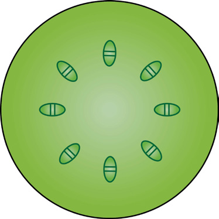

84
Student’s Book - Form Two
Biology for Secondary Schools
Exercise 4.1
1.
The diagram below represents a
transverse section of a (i) young stem and (ii) young root.
(i)
(ii)
C
B
A

A
C
(a)
Explain the functions of the
parts labeled A, B and C.
(b)
Describe three differences
between the sections shown
above.
2.
Describe how xylem vessels are adapted to their functions.
3.
Explain the meaning and
importance of translocation.
Absorption and movement of water and mineral salts
Task 4.2
Use internet sources to search for a simulation or video showing the
absorption and movement of water and
mineral salts in plants. Then, write short
notes.
Plants absorb water and mineral salts from the soil through root hairs. The root hairs are found just behind the root tip. They are in contact with the soil and soil water.
Activity 4.2: Investigate the absorption
of water by plant roots
Materials
A plant with variegated leaves or light coloured flowers, coloured water, and a beaker
Procedure
1.
Uproot the plant gently, taking care
not to break or damage the roots.
2.
Dip the plant in a beaker containing
coloured water. Ensure that the plant
roots are immersed in the water.
3.
Leave the set up overnight.
4.
Observe the variegated leaves or
the petals of the plant.
Questions
1.
What have you observed?
2.
What can you conclude?
08/04/2026 10:18:24